EQ2 Programmable EQ User Guide
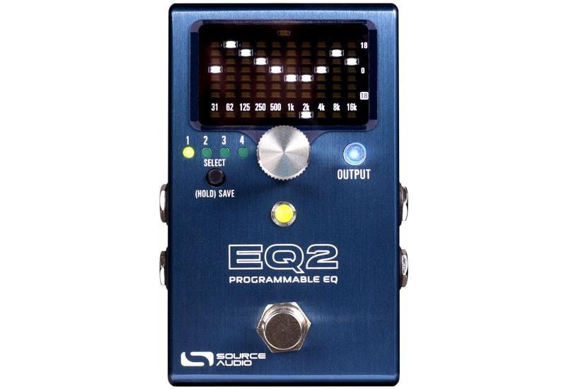
Welcome
Built from the EQ2 Programmable EQ User Guide (SA270). Two companion documents are folded in: the standalone MIDI Mapping Table and the Quick Start Reference Card at the end.
Sources: User Guide · MIDI Mapping Table · Quick Start Reference Card
Thank you for purchasing the Source Audio EQ2 Programmable EQ! The EQ2 is the pedal for the working musician; the tone-chaser. With 10 fully customizable bands of graphic or parametric equalization, adjustable Q controls, full stereo capabilities, and complex routing options, this EQ pedal will fit in virtually any setup. A modern update to its predecessor, the SA170 Programmable EQ — which landed onto the boards of pros such as David Gilmour and John Mayer among many others — the EQ2 boasts One Series hardware, full MIDI compatibility, and a real-time editing interface for a DAW-like experience.
The EQ2 is our first pedal to support two-way mobile Neuro communication via the USB Mini port. It also includes a Control Input port, and 5-pin MIDI DIN In and Out/Through ports for full MIDI integration. The pedal features true stereo operation, including a Split Mode which allows you to create a separate EQ curve for each output.
Coupled with the EQ2 is its own sound editor in the Neuro App and Desktop Editor, making custom equalization easy and intuitive to create and share with other users. EQ2’s sound editor features deep editing controls such as complex routing, channel volumes, and an optional noise gate and limiter. Visit the Quick Start guide for basic operation or move on to the following sections for more in-depth information about the EQ2. Enjoy!
– The Source Audio Team
Feature Overview
10 Adjustable Frequency Bands – Adjust each of the 10 bands to be set at any point on the audio frequency spectrum between 20Hz and 20,000Hz (20kHz).
Additional +12dB of Clean Boost – Each preset has a configurable “Output” control with up to +12dB of clean boost on tap.
Universal Bypass – Select between true bypass or analog buffered bypass. The EQ2 features high-quality signal relays for true bypass and transparent buffers for analog bypass.
Flexible Stereo Routing – EQ2 is equally at home in a mono or stereo rig. The EQ2 Auto-Detects the Inputs and Outputs that are being used and accordingly routes each channel in Mono-to-Mono, Mono-to-Stereo, or Stereo-to-Stereo modes. Additional complex routing options are available in the Neuro Editors.
Split Mode – By default, the same equalizer settings are applied to both Channel 1 and Channel 2. Using Split mode allows for entirely independent settings of level, frequency, Q factor, etc. per signal channel.
Compact Design – The extruded anodized aluminum housing, with its slim profile and small footprint, is built for the rigors of the road.
Onboard Tuner – EQ2 comes with an onboard chromatic tuner that can be accessed in multiple different ways using the pedal’s footswitch.
Presets – Save your favorite sounds with the touch of a button. Save a total of 128 presets recallable on the pedal itself or with an external MIDI controller.
Neuro Mobile App – The Neuro App is a free download for iOS and Android mobile devices. The App offers a powerful extension to the basic pedal functionality with the options of preset saving and publishing. Edit your presets and download them directly to your pedal, save them in your private library, or publish and share them with the rest of the Neuro Community.
Two-Way Mobile Communication – For the first time, EQ2 will provide two-way Neuro communication with your mobile device through the USB port on the pedal.
The Neuro Desktop Editor – Connect your EQ2 to the USB port on your Mac or Windows PC to create and save advanced presets with the Neuro Desktop’s sleek editing interface. The Neuro software is a free download for Mac or Windows based PCs. Two-way communication between the pedal and your computer also allows the Desktop Editor to see the parameter settings of every preset stored in your EQ2.
Neuro Hub Ready – The Source Audio Neuro Hub connects up to five compatible Source Audio pedals and stores the settings of multi-pedal “Scenes.” Up to 128 Scenes can be saved and recalled using the Neuro Hub alongside a standard MIDI controller. This option combines the power of a multi-effects system with the ease and flexibility of a traditional pedal board.
Full MIDI Implementation – EQ2’s parameters can be accessed and controlled using MIDI messages via its 5-pin DIN Input, a Neuro Hub connection, or USB port. Use MIDI messages to engage/disengage the pedal, change presets, move parameters with a MIDI expression controller, and more. Class-compliant USB-MIDI allows the EQ2 to work as a plug-and-play device with recording software running on Mac and Windows.
External Control – Easily configure the EQ2 to work with a variety of expression pedals and footswitches for flexible external control options.
Full Frequency Range – Since the human ear can detect between 20Hz and 20kHz (20,000Hz), each of the 10 bands can be set anywhere between 20Hz and 20kHz for ultimate sonic customization.
Connecting the Pedal
Power
To power the unit, connect a 9V DC negative-tipped power supply to the jack labeled DC 9V on the back panel. EQ2 needs at least 200mA of current to operate as intended. Please note that your EQ2 does not include a power supply.
Warning: Using an unregulated supply, could damage the unit. A power supply with insufficient current levels may also cause noise or other unpredictable behavior. Please be very cautious when using a power supply and refer to the power supply requirements printed on the bottom of the EQ2’s housing.
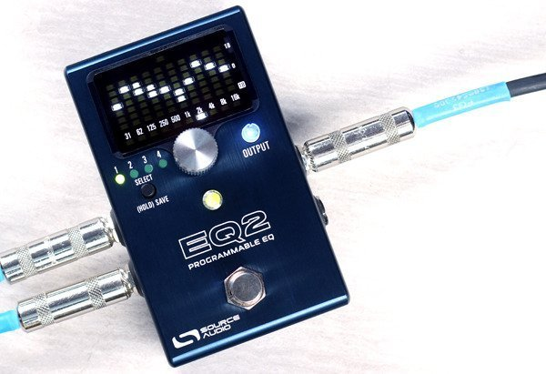
Connections
Guitar/Audio Connections
Using standard ¼” mono (TS) cables, connect your guitar, bass, or other instrument to the INPUT 1 jack and your amp (or the next audio device in the signal chain) to the OUTPUT 1 jack. If you have a second amp, connect it to OUTPUT 2.
When the power and audio connections have been made, EQ2 is ready for use.
Input Side Connections
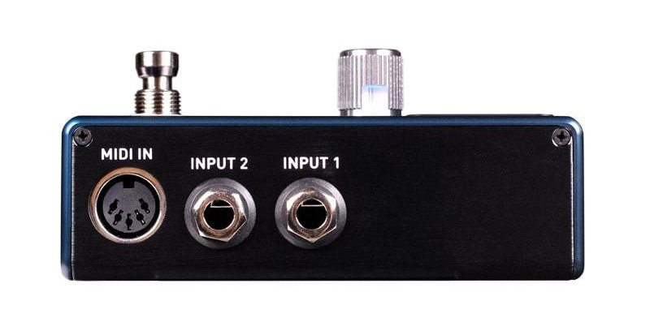
Input 1
INPUT 1 is the primary input for guitar, bass, or other instruments. It can also accept line-level inputs and will work in your amp’s effect loop. Connect it to your instrument or other audio source using a mono (TS) ¼” cable. Details about the appropriate signal levels are available in the Specifications section.
Input 2
Use the secondary audio input for stereo sources or as the data connection to your mobile device when using the Neuro App.
- INPUT 2 as an Audio Input: The tip contact on INPUT 2 acts as a secondary input for guitar, bass, or other instruments. Connect your instrument (or the previous effect in the signal chain) using a mono (TS) ¼” cable. The EQ2 will automatically configure itself for stereo audio input. Other routing options are available using the Neuro App. For more information about stereo routing, refer to the Stereo Operation section.
- INPUT 2 as a Neuro App Data Input: The ring contact on INPUT 2 acts as a data connection for the Neuro Mobile App. The Neuro App sends data to the pedal using your mobile device’s headphone jack. Connect it to your mobile device using the included stereo (TRS) ⅛” to ¼” cable. It can also accept daisy-chained Neuro data from another Neuro-compatible pedal in the chain, provided that a TRS cable is used. The audio signal (if applicable) will be on the tip contact of the plug, and the Neuro App data will be on the ring contact. This allows audio and Neuro data to flow on the same cable.
MIDI In
This is a standard 5-pin DIN connector that accepts MIDI control messages from external devices, including program change (PC) and continuous controller (CC) messages.
Output Side Connections
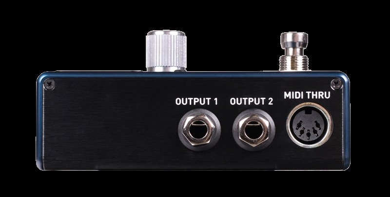
Output 1
This is the primary audio output. Connect it to your amplifier, recording interface, or the next device in your effects signal chain using a mono (TS) ¼” cable.
Output 2
OUTPUT 2 can act either as an audio output or a daisy-chain data connection for the Neuro App.
- OUTPUT 2 as an Audio Output: The tip contact on OUTPUT 2 acts as the secondary audio output. It carries an audio signal when the EQ2 is configured with a signal routing that uses stereo outputs. Connect it to your amplifier, recording interface, or the next device in your effects signal chain using a mono (TS) ¼” cable.
- OUTPUT 2 as a Neuro App Data Daisy-Chain Output: The ring contact on OUTPUT 2 acts as a data connection for the Neuro App, passing data from the EQ2 to the next Source Audio effect in your signal chain. You can daisy-chain the Neuro App data regardless of whether OUTPUT 2 is configured to output audio or not. Connect OUTPUT 2 to the next device’s Neuro App Data input (usually INPUT 2) using a stereo (TRS) ¼” cable. The audio signal (if applicable) will be on the tip contact of the plug, and the Neuro App data will be on the ring contact. This allows audio and Neuro data to flow on the same cable.
MIDI Thru
This is a standard 5-pin DIN connector that echoes MIDI messages from the MIDI IN jack and sends them to other devices. The EQ2 does not generate any of its own MIDI data.
Power and Control Connections
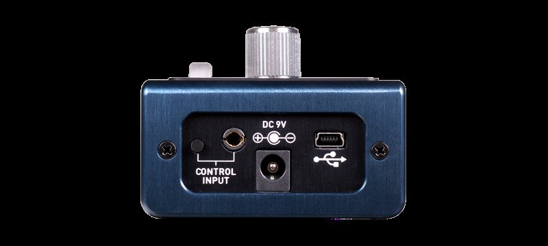
DC 9V (Power)
Please use a regulated 9V DC, center-negative power supply rated for at least 300mA (not included). Unregulated or lower-current supplies may cause noise or unpredictable performance.
USB
Connect your computer or mobile device (Windows or Mac) to the EQ2’s USB port (denoted by the icon) using a standard USB mini B cable. The EQ2 is a class compliant USB device, meaning that it does not require any custom drivers. For more information about the EQ2’s USB capabilities, refer to the USB section of the User’s Guide.
Control Input
The 3.5 mm CONTROL INPUT port connects to external control devices such as the Source Audio Tap Tempo Switch, Source Audio Dual Expression Pedal, Neuro Hub, and Hot Hand Motion Controller. For more information, refer to the Expression Control and Neuro Hub sections of the User’s Guide.
Basic Operation
The EQ2 defaults to each band in the flat position, Q value of 1.0, and set to the standard graphic-EQ frequency values (the value written on the face of the pedal under each band) of 31, 62, 125, 250, 500, 1k, 2k, 4k, 8k, and 16k Hertz. No presets are saved from the factory, Split mode is set to OFF, and Preset Extension mode is set to OFF. For more details on Preset Extension mode, see the Preset Storage and Recall section.
Selecting a Band to Adjust
To select a frequency band, hold the ENCODER KNOB down while rotating it right or left. If Split mode is enabled, continuing to rotate the encoder past the rightmost value will display the values for the Channel 2 equalizer. The display will flash briefly to “CH 2” to indicate the change. You can navigate back to Channel 1 equalizer by rotating the encoder past the leftmost value.
Adjusting a Band
To adjust a frequency band, rotate the ENCODER KNOB clockwise or counterclockwise without pushing it down. Rotating the ENCODER KNOB clockwise will boost the frequency selected, while rotating it counterclockwise will cut the frequency. Each “click” of the encoder will adjust the frequency band up or down in 1dB increments. Note that finer adjustment increments of 0.2dB are available in the Neuro Desktop and Mobile Apps.
Set to Flat
If you’ve made changes to your EQ that you would not like to keep, simply double tap the ENCODER KNOB to “start over” and bring each band back to its default (flat) position. Note that this will NOT reset adjustments made to the Frequency or Q Factor settings for any band.
Adjusting the Frequency of a Band
The human ear can detect frequencies from about 20Hz at the lowest, to about 20,000Hz (20kHz). Since this is such a broad spectrum, and we only could fit 10 bands to work with on the pedal, we armed each band with the ability to be set to anywhere between 20Hz and 20kHz.
Each of the 10 frequency bands is fully adjustable over the audio spectrum of 20Hz to 20,000Hz (20kHz). Additionally, the filter frequencies used on Channel 1 can be completely different than those used on Channel 2. All of these filter adjustments are saved per preset.
To adjust a band frequency, say you want to control a band at 5kHz, but you don’t see this frequency option on the face of the pedal. You can select any band (though the band closest to your desired frequency might make the most sense) and change the frequency value to 5kHz. To do this, select a frequency, then press + hold the ENCODER KNOB. This brings up the Options menu. “Freq” is the first option. Click once on the encoder. The screen will now read out the current frequency value of the band you’ve selected. Rotate the encoder to adjust the frequency. Each band contains the entire pedal’s range of frequencies, for total sonic customization.
Note that we had to limit the number of frequencies available when editing directly using the encoder to a smaller subset of the full range from 20Hz to 20kHz. If you need to make single Hz adjustments to the frequencies, this can be done using the Neuro Desktop or Mobile Apps.
Adjusting the Q Factor (Width) of a Band
Let’s say you’re used to your DAW equalizer software, and you’re used to being able to make a particular EQ band more wide or narrow. This can be done on the EQ2! To do this, select a band, then press + hold the ENCODER KNOB. This brings up the Options menu. “Q factor” is the second option. Click once on the encoder to edit the Q factor. The screen will now readout the current Q factor value of the band you’ve selected. Rotate the encoder to adjust the Q up or down. The available range of value is 0.5 to 10.0. The lowest value (0.5) gives you a very wide filter range while the highest value (10.0) makes the filter band very narrow.
Setting the Master Output
The small, blue LED-lit knob labeled “OUTPUT” is a master output volume control, integral for matching, raising, or lowering your signal’s output depending on your rig’s needs. The brightness of the LED corresponds with the position of the knob, giving you an indicator of how your output level is set. Note that the OUTPUT control will scale the volume of both channels simultaneously.
Unity gain, or 0dB, is set to be the mid-point of the OUTPUT knob range. When adjusting the knob, the blue LED and Activity LED will flash twice to indicate when “unity” has been reached.
The Options Menu
For ultimate tone-shaping power and flexibility, we’ve included more parameters in an easy-access Options page. To access the Options menu, press + hold the ENCODER KNOB. Below “Navigating the Options Menu” is the list of menu items and what they entail. Please note that the “SHELF” option will only appear when adjusting bands 1 and 10.
Navigating the Options Menu
- To enter the Options Menu, press + hold the ENCODER KNOB.
- From here, you will see the first menu option, FREQ.
- Rotate the ENCODER KNOB to cycle though the Options choices. Your position within the list of options is denoted by the vertical strip of LEDs on the left side of the screen.
- Once you’ve arrived at the option or parameter you’d like to toggle or adjust, press the ENCODER KNOB.
- Now, rotate the ENCODER KNOB to toggle between the options, or to adjust a parameter’s value. You will see the readout on the screen change, such as in the form of “on/off” or by a numeric parametric value, depending on which option you’ve selected.
- Press the ENCODER KNOB once more to exit the Options menu and return to your EQ screen.
FREQ
Sets the frequency of the selected band between 20Hz and 20kHz. More precise numbers can be selected in the Neuro Mobile App and Neuro Desktop Editor.
Q FACT
Sets the Q factor of each filter, measured in octaves. The default setting is 1.0.
GAIN
Sets the gain per channel. Each channel has its own gain control from -18dB to +18dB. Useful for matching the Channel 1 and Channel 2 levels when Split mode is used, similar to a line selector pedal. Note that these channel gain values are separate from the master output volume control.
SPLIT
By default, all of the controls for Channel 2 will match the Channel 1 settings. If Split Mode is turned ON, the Channel 2 controls can be set to different values. Turning Split OFF will make Channel 2 match Channel 1 again. When Split is enabled, push and turn the encoder to scroll all the way to the right to view and edit Channel 2. Scroll back to the left to view and edit Channel 1.
LIMITER
Enable or disable the clipping limiter to prevent digital clipping. By default the limiter uses a lookahead delay, but this can be turned off in the Neuro Mobile App and Neuro Desktop Editor.
GATE
Enable or disable the EQ2’s internal noise gate.
THRESHOLD
Adjust the noise gate threshold from -100dB to -60dB. -60dB would be the most aggressive gating for very noisy signals.
HP FREQ
Each channel has an independent input high pass filter that is adjustable from 10Hz to 80Hz. Note that the filter is always active. Setting to 10Hz effectively removes the filter from the signal.
SHELF (Bands 1 and 10 Only)
The lowest and highest filter bands can be changed from a normal “peaking” filter to a “shelving” type with this control. A low shelf (Band 1) boosts/cuts all frequencies lower (to the left of) the frequency selected. A high shelf (Band 10) boosts/cuts all frequencies higher (to the right of) the selected frequency. The frequency and Q settings for these bands will apply to both peaking and shelving modes.
CONFIG
Toggles between parallel filters (default option) and cascading (series) filters. Most EQ devices use parallel filters, but some parametric equalizers use filters in series for a more dramatic effect.
MIDI CH
Sets the global MIDI Channel on your EQ2 from Ch. 1 to Ch. 16.
FS Option
Select the main global footswitch operation mode. There are eight possible configurations, including enabling the tuner by double tapping or holding the footswitch. For more information on the footswitch operation options, visit the Hardware Options section of this guide.
CNTRL OPTION
Sets the global Control Input mode: 1-Neuro Hub/Expression, 2-External Switch, 3-Increment/Decrement Preset, 4-Tuner. For more information, see External Switch Options.
Controls
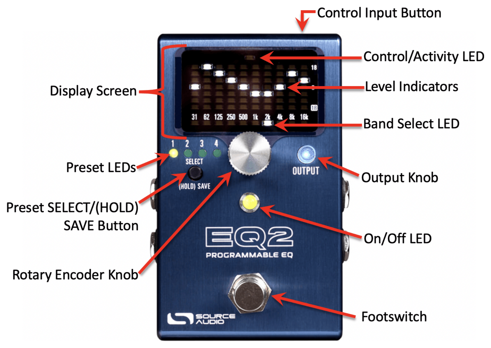
Rotary Encoder Knob
This is the key to the whole operation. Push + rotate the Encoder Knob to select a frequency band. Turn the Encoder Knob clockwise or counterclockwise to boost or cut the selected band. Double tap the Encoder Knob to “start over” and set the bands back to flat. Push + hold the Encoder Knob to enter the Options screen.
OUTPUT Knob
Think of this knob as a master volume control. Rotate this knob to boost your signal +12dB or cut your signal down to -∞dB (zero volume). The OUTPUT Knob is lit with a bright blue LED, which will glow brighter the higher the knob is turned up. When adjusting the knob, the blue LED and Activity LED will flash twice to indicate when “unity” has been reached. Unity gain, or 0dB, is set to be the mid-point of the OUTPUT knob range.
Footswitch
By Default, click the footswitch to engage or bypass the pedal. Hold the footswitch down while the pedal is bypassed to scroll through presets. Release when you’ve reached your desired preset. The press + hold actions in both engaged and bypassed states, as well as double-tap actions can be changed in the Hardware Options.
Control Input Button
This small button located at the top of the pedal is used to enable or disable external control. See the External Control section for more details.
ON/OFF LED
The ON/OFF LED indicates whether the effect is bypassed or engaged. In Tuner Mode, when your note is too sharp or too flat, the LED becomes orange. When your note is at pitch, the LED becomes green.
Preset SELECT/SAVE Button & Preset LEDs
Push the SELECT/SAVE Button to cycle forward through preset slots. Hold the button to save your current settings as a preset. The Preset LEDs will indicate which preset slot you are currently working in.
Presets can also be saved to different locations other than the currently selected slot. To do this, once a preset has been edited, press and hold the SELECT/SAVE button until the preset LED begins to blink rapidly, then release the button. Next, do a quick press and release of the SELECT/SAVE button to select a different preset slot. Finally, press and hold the SELECT/SAVE button.
Display Screen
The luminous, multi-purpose display screen lets you view and edit your EQ curve in real time and transforms into a navigable “Options” menu when you hold down on the Encoder Knob. The main display contains the Control/Activity LED, the Band Select LEDs, and the Level Indicators for each band.
Control/Activity LED
The LED located in the top center is the Control/Activity LED, mapped to the CONTROL INPUT Button.
Frequency Band LED
The LED underneath the frequency values indicates which band you are currently editing. It will move with the Encoder when you push + rotate the knob. In Split Mode, rotating the Encoder beyond 16k will bring you to your EQ settings for the “right” channel.
Level Indicators
The LED indicator LEDs display the current boost or cut settings for all 10 bands. The center position is 0dB or “flat”. The maximum boost/cut levels are +/-18dB. In Options mode, the LEDs are rearranged to display the menu text. In Tuner mode, the LEDs are rearranged to form the note closest to the frequency you are playing as well as arrows on either side indicating whether to tune up or down.
Common EQ Configurations
With 10 customizable bands and +/- 18 dB of boost or cut on tap for each band, there are thousands of configurations possible when equalizing an instrument. The sheer amount of options can be paralyzing for anyone new to EQ or unsure of where to start. Below are a few common EQ curves that can serve as jumping-off points or simply help you dial in some interesting tones.
Vocal Bump, Mild Bass Reduction
This particular EQ shape accentuates the “vocal” frequencies in the upper range. This can help vocals stand out in a mix, or give your midrange instrument a more “vocal-like” quality. Cutting or shelving around 31Hz will reduce any unwanted “boominess” of low frequencies.
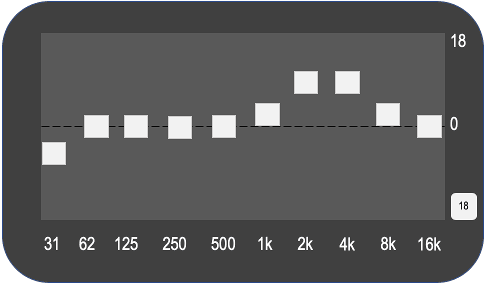
“Arrow” Configuration (Drastic Mid Push)
This angular configuration allows the mid frequencies to “slam” your amplifier. A similar configuration was popularized by Eddie Van Halen with his graphic EQ pedals back in the 70s. This curve helps a guitar cut through the mix and stand out for solos or lead parts. It’s particularly helpful if you have an amp that is already distorting. Note that this example is quite drastic and may need to be tamed depending on your setup.
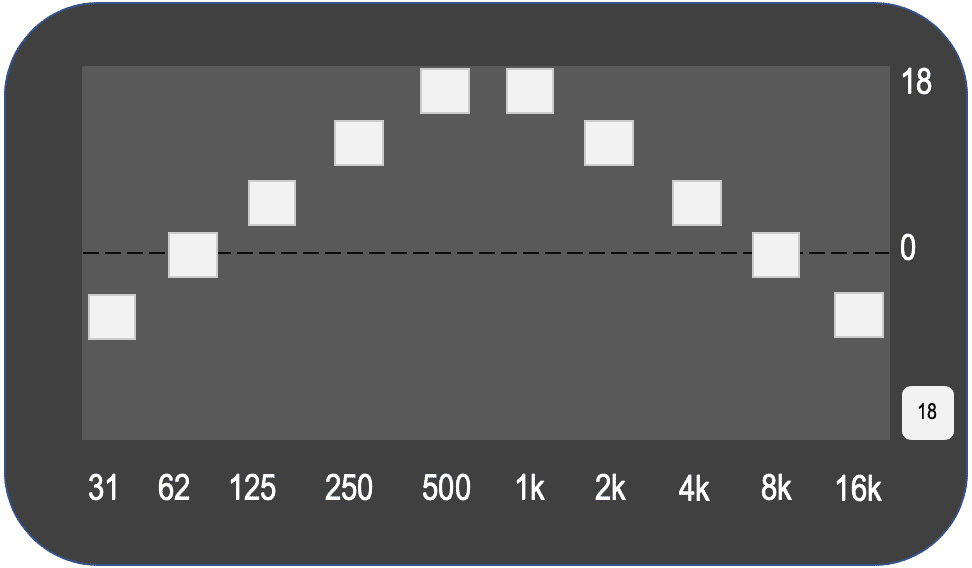
Drastic Mid Scoop
You might have heard the term “mid-scooped” to describe modern metal guitar tones. Since the guitar is already a midrange instrument, cutting those frequencies while boosting the high and low frequencies can give it a big, thick tone. Take in small doses; not enough mid frequencies can make a guitar get “lost” in the mix since its prominent frequencies have been cut.
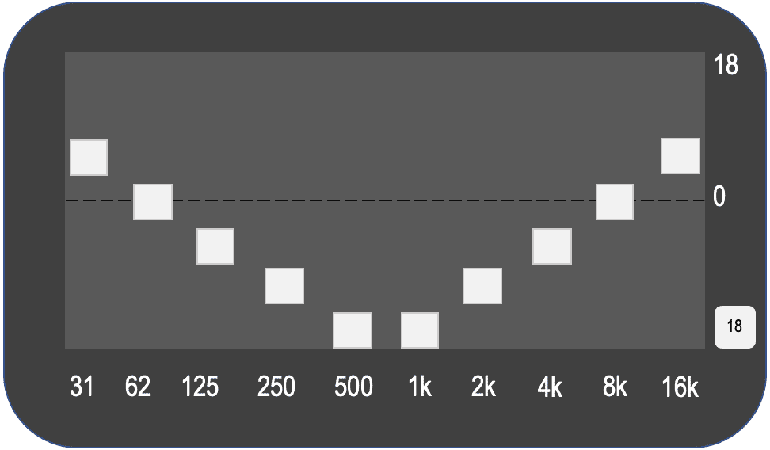
Subtle Mid Scoop
Many amplifiers and overdrive pedals have a very pronounced midrange. Mildly cutting the mid frequencies can dial out some of that “honk” from classic mids-y amplifiers, giving you a full-sounding tone without disappearing from a live mix.
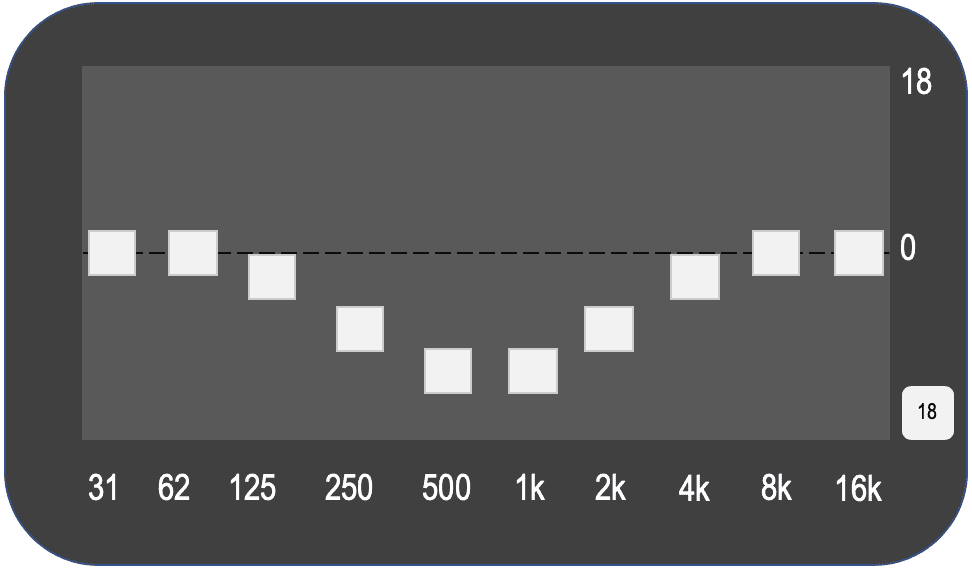
Mild Bass Boost, Treble Roll-Off
A curve similar to this one can help to tame a brightly voiced amplifier or pickup. Notice how this configuration doesn’t look too dramatic—sometimes when EQ’ing, less is more!
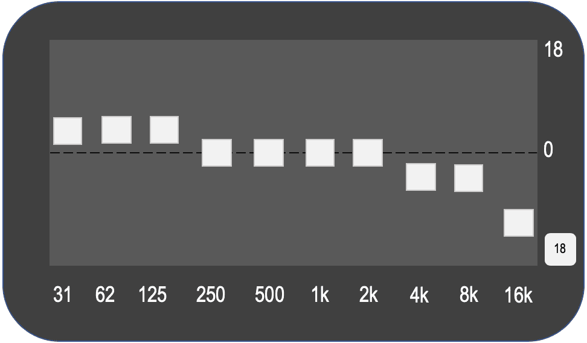
Single Coil Sanctuary
Barely cutting each frequency while giving a spike to about 5-7kHz can make a humbucker-equipped guitar sound similar to a single coil Strat or Tele. This setting works notably well for darker or warmer-toned guitars, like a Les Paul, and can really liven up a clean tone.
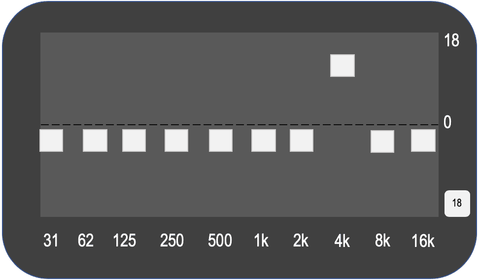
Stereo Operation & Signal Routing
The EQ2 is flexible for any rig or use case due to its stereo INPUT and OUTPUT jacks. By default, EQ2 auto-detects the cables connected to INPUTS and OUTPUTS 1 & 2 and engages the appropriate Routing Mode. Stereo Routing can also be performed manually with the Neuro Editors, select between “Mono In, Stereo Out” or “Stereo In, Stereo Out.”
Auto Routing Modes
There are four routing modes available when the EQ2 is in its default Auto Detect mode. See detailed descriptions of each Auto Detect mode in the sections below.
Mono In, Mono Out
This is the most common use case. Plugging the incoming signal into INPUT 1 with OUTPUT 1 connected to an amp (or the next device in the signal chain) produces a standard mono signal. Dual processing effects are also mixed down a single output.
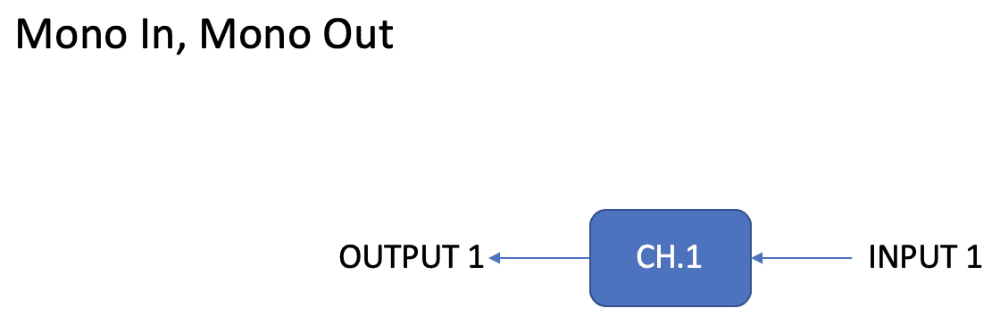
Mono In, Stereo Out
This is a very common use case that allows you to create some nice stereo imaging from a single mono instrument input or use your EQ2 as a splitter to send your signal to two separate outputs. Note that if Split mode is enabled, you can set up two entirely different equalizer curves for each output. When the unit is bypassed in this mode, it will automatically switch to Soft Bypass mode to maintain the bypass signal on the Channel 2 output.
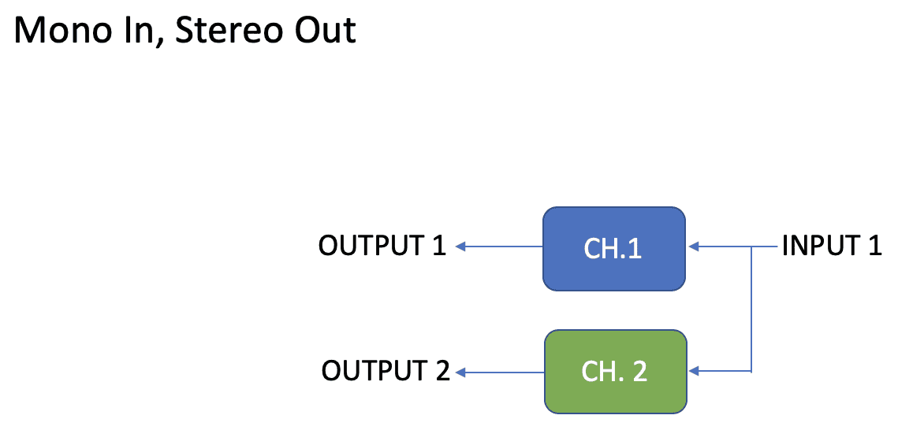
Stereo In, Stereo Out
This mode should be your default selection for Stereo In, Stereo Out applications. Stereo In, Stereo Out allows you to continue your stereo chain of effects. In Stereo In, Stereo Out mode, you may place the EQ2 in two entirely separate spots in your signal chain, such as before your amp and in your amp’s effects loop. A general warning: depending on your rig or setup, this may cause some ground noise. This is the best routing method for placing EQ2’s two channels at separate points in your effects chain.
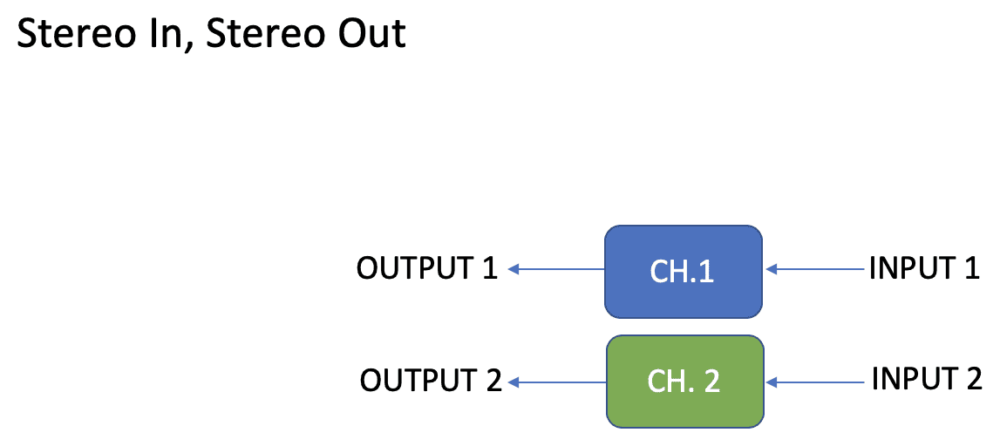
Stereo In, Mono Out
This mode will accept stereo input on jacks INPUT 1 and 2. Inputs 1 and 2 are sent to Channel 1 and 2 equalizers, respectively. The outputs of the Channel 1 and Channel 2 equalizers are mixed together and sent to OUTPUT 1.
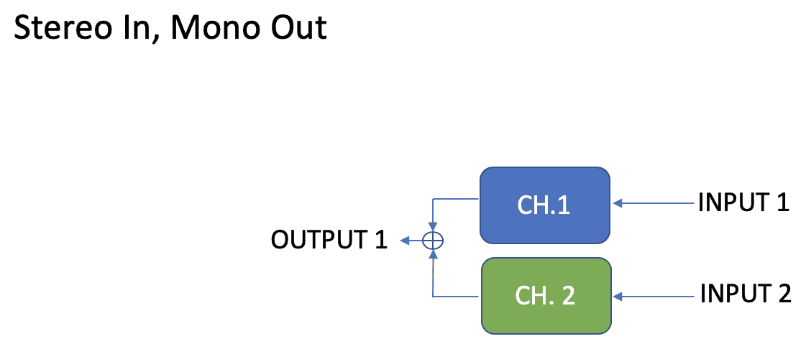
Additional Routing Modes
EQ2 supports two additional routing modes available in the Neuro Mobile App and the Neuro Desktop Editor, External Loop 2 -> Loop 1 and Cascade Mode.
External Loop 2 -> Loop 1
This routing mode supports a use case that involves placing a pedal effects loop between the two active EQ channels. In this routing mode, a loop for external effects is placed after Channel 2, before Channel 1. Channel 2 cascades into the External Loop, which cascades into Channel 1. INPUT 2 and OUTPUT 2 act as “Return” and “Send” for the effects loop.
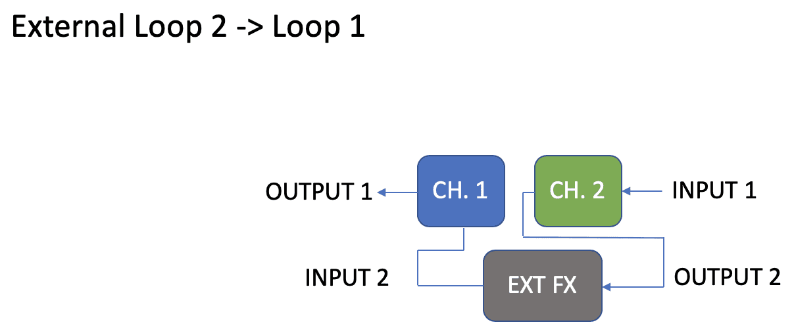
Cascade Routing Mode
This routing mode is mono-only, and cascades Channel 1 into Channel 2 before your signal is sent outbound. In this mode, it is possible to use both sets of filters in order to create a custom 20-band EQ! Remember that while you can technically have 20 different filters, the filters in Channel 1 will come before the filters in Channel 2 in your signal chain.
Preset Storage and Recall
User Presets store all user editable parameters. This includes the knob positions, parameter settings, frequencies, routing options, external control, and the full list of Neuro/MIDI accessible parameters.
Included in every preset are settings for either output curve (Channel 1 [Mono] or Channel 2). After a preset is recalled, you can always tweak the Output in a performance situation by turning the knob. The knob parameter will then “jump” to the current knob position as it is rotated.
Recalling Presets
The first four User Presets (or eight in Preset Extension Mode) are accessible via the onboard hardware or with an external footswitch in the following ways:
- Click the SELECT button to cycle through the hardware user presets. This function works whether the pedal is engaged or bypassed.
- By default, when the effect is bypassed, press and hold down the footswitch to cycle forward through presets. Release when you’ve arrived at your desired slot. If the pedal is engaged, you will not be able to cycle through presets. This behavior can be switched in the Neuro App and Neuro Desktop Editor’s Hardware Options for the EQ2, so you can cycle through presets while the pedal is engaged rather than bypassed.
- To access further presets (9–128), press the SELECT button while holding the ENCODER KNOB. Then, use the Encoder to navigate to the preset slot you’d like. Then, press the SELECT button once more to select that preset slot.
Recalling MIDI Presets
All 128 available User Presets are accessible with an external MIDI controller. MIDI controllers can be connected via either the 5-pin DIN (MIDI IN) jack on the side of the pedal, the USB port at the top of the pedal, or through a Neuro Hub, which connected to the CONTROL INPUT at the top of the pedal. All 128 User Presets can be recalled with the corresponding MIDI program change (PC) messages.
Note: When recalling presets via MIDI PC messages, you may wish to queue up your preset with effect bypassed. To do this, simply engage the preset, bypass it with the footswitch, then re-save the preset normally. When recalled, the pedal will load the saved user settings, but the effects will be bypassed until you engage the pedal.
Copying a Preset to a New Location Using the Select/(Hold) Save Button
- Select the preset you would like to copy by pressing the SELECT Button until the corresponding PRESET LED is lit.
- Press and hold the SELECT Button for one second until the corresponding PRESET LED begins blinking rapidly. Quickly release the SELECT Button. The PRESET LED should continue to blink rapidly. This indicates that the EQ2 is in copy mode.
- Tap the SELECT Button to increment the preset. The corresponding PRESET LED should continue to blink rapidly. Tap the SELECT Button again until the desired copy destination is selected.
- Press and hold the SELECT Button until the PRESET LED blinks slowly and then turns solid. This indicates that the preset has been saved to the new location. The original location will not be changed or overwritten.
Copying a Preset to a New Location Using an External MIDI Controller
- Select the preset you would like to copy by sending a MIDI program change message to the EQ2.
- Press and hold the SELECT Button for one second until the corresponding PRESET LED begins blinking rapidly. Quickly release the SELECT Button. The PRESET LED(S) should continue to blink rapidly. This indicates that the EQ2 is in copy mode.
- Send a desired MIDI Program Change number to indicate the desired copy destination for the preset.
- PRESET LED will blink fast and then turn solid. This indicates that the preset has been saved to the new location.
Copying a Preset to a New Location Using the Neuro App
Using the BURN command in Neuro Mobile or Desktop Editors, it is possible to copy presets to any location in memory.
Clearing all Presets
All 128 User Presets can be erased using the Factory Reset procedure. Warning: the Factory Reset procedure resets the entire pedal back to the state in which it was originally shipped – this includes all global settings and User Presets. A Factory Reset will not erase any firmware updates.
Additional Features
Along with complete equalization control and complex routing options, EQ2 packs a few more features for the ultimate tone-shaping experience.
Noise Gate
Accessible by the Options menu (see Basic Operation for details on how to access), an optional noise gate is available for reducing any noise from your signal up to a certain dB threshold. More noise gate options are available in the Neuro App and Neuro Desktop Editor.
Limiter
Designed to reign in your signal and keep it from peaking or clipping, we’ve implemented an optional limiter if you need to keep your playing dynamics in check. The limiter acts similarly to a compressor in that it catches any “peaks”, or volume spikes, from your input signal and regulates them down to a more uniform level.
The limiter is accessible through the Options menu, and more parameters are available in the Neuro App and Neuro Desktop Editor.
“Split” Mode
Putting your pedal into Split Mode enables a second EQ channel for the Right output. This entirely separate EQ curve will allow you to have a different EQ for either output, great for any stereo setup. You can use an external switch like the Source Audio Tap Switch to swap the channels on any preset you put into Split Mode. In a mono situation, this means you can toggle between 2 separate EQs per preset.
Tuner
A chromatic tuner is available by pressing the footswitch + ENCODER KNOB at the same time. Other ways to access the tuner via the pedal’s footswitch can be configured in the EQ2’s Hardware Options via the Neuro App and Neuro Desktop Editor. See Hardware Options for more details.
Using the Tuner
When the tuner is activated, the Level Indicators rearrange to form notes (A, B, C, D, E, F, and G). When the note you’re playing is sharped as opposed to natural, the Control/Activity LED will appear above the note. For example, if you’re tuning to the note D#, this will appear on the screen as “D” with the Control/Activity LED illuminated above it, whereas D will appear on the screen as a “D” with NO Control/Activity LED above it.
As you start tuning up, you’ll notice the ON/OFF LED is orange, and arrows on either side of the note begin to blink, indicating whether to tune up or down to get to the precise pitch. The Band Select LED will indicate how close you are to the precise pitch of the note.
Note: Using the tuner will always mute the instrument’s signal, whether the pedal is engaged or bypassed.
Approaching Pitch
As you approach an exact pitch, the ON/OFF LED will change from orange to green, and the Band Select LED will appear as two LEDs illuminated in the center of the screen just below the note.
Reference Pitch
Standard concert pitch is A=440Hz, but some musicians (such as Jimi Hendrix) prefer to perform in slight variations of concert pitch, like A=432Hz. The Reference Pitch of the tuner is configurable in the Hardware Options section of the Neuro App and Neuro Desktop from A=430Hz to A=450Hz.
External Control
Plug an expression pedal, an external footswitch, the Source Audio Tap Tempo Switch, or the Source Audio Hot Hand 3 Universal Wireless Controller into the EQ2 Programmable EQ’s CONTROL INPUT jack and access an array of external functionality and expression control.
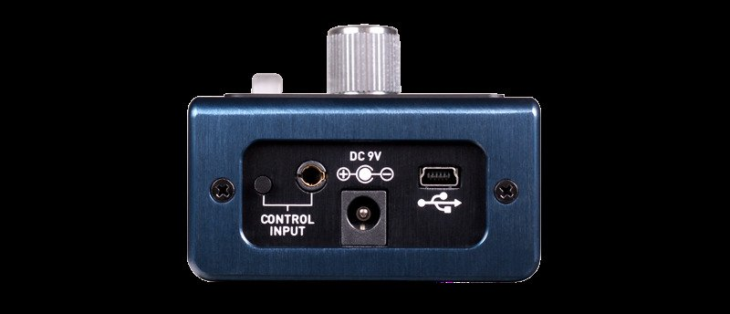
External Switch
External switches can be used for several different control options. They provide an easy way to remotely step through presets, toggle between settings, and more. The EQ2 is compatible with the Source Audio Tap Tempo Switch.
External Switch Options
There are four ways the Control Input port can be configured. Three of these ways are through the use of an external switch; the Source Audio Tap Tempo Switch. Below are the possible configurations for the Control Input port. Please note that External Switch Options is a global hardware setting.
Neuro Hub/Expression: This configures the Control Input port to receive expression signal (via the Source Audio Dual Expression Pedal) and MIDI signal from the Neuro Hub.
External Switch (Assignable): This option maps the external switch to any of the functions listed in the External Switch section of the EQ2’s Sound Editor, and allows you to decide whether the action is momentary (only active when held), or latching (activated after pushing once, deactivated after pushing a second time). Additionally, these actions are saved per preset.
External Switch (Preset Up/Down): This option configures the external switch to increment or decrement presets.
External Switch (Tuner): This option configures the external switch to activate the EQ2’s onboard tuner. For more information on the tuner, visit the Additional Features section of this guide.
External Switches (⅛” TRRS Connection)
The Source Audio Tap Tempo footswitch can also be connected to the CONTROL IN jack using a 3.5mm (⅛ inch) cable. If you wish to use this function, you must enable the function globally with the Use Control Input for External Switch option in the Hardware Options section of the Neuro Desktop Editor.
Source Audio Tap Tempo footswitches can be purchased directly from the Reverb.com Official Source Audio Online Store.
Expression Control
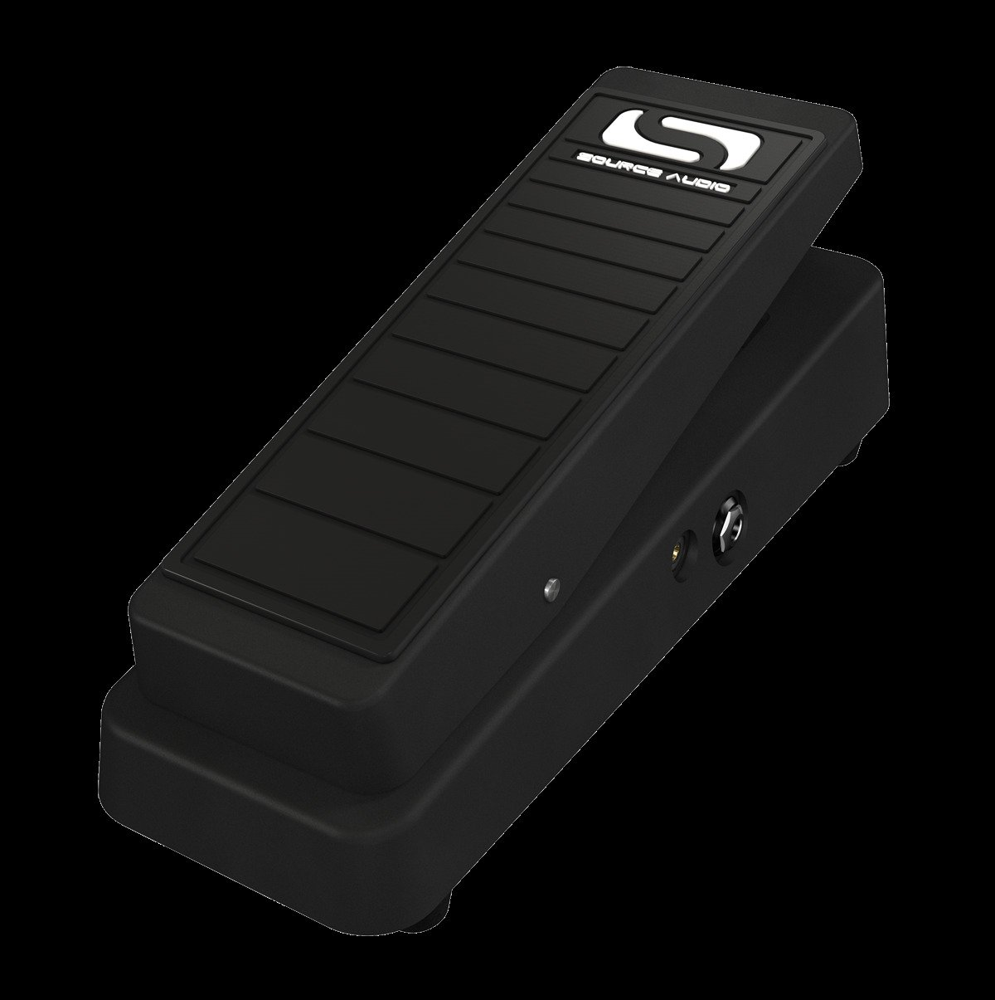
Use a Source Audio Dual Expression pedal to control up to four different parameters on the EQ2 per preset. Parameters include Band Frequency value, Band Level, Band Q value, Master Volume (Output) Control, Noise Gate Enable, and Limiter Enable.
Common uses for the Expression pedal would be to map it to Output control so the EQ2 + Expression pedal would act as a volume pedal, or to automate the sweep and bandwidth of some mid-range frequencies to simulate a “wah” effect.
Connecting the Expression Pedal
Connect a Source Audio Dual Expression pedal using a 3.5mm TRRS cable from the EXP pedal’s Sensor Output to the EQ2’s CONTROL INPUT port on the pedal’s top panel. Press the CONTROL INPUT button to enable External Control.
If you are not getting the desired results from your Expression pedal setup, go to the Hardware Options section of the Neuro software. You’ll need to select “Neuro Hub/Expression” under “Control Input Option”, and you may also need to calibrate your expression pedal. For more details, visit Hardware Options.
Mapping Parameters
The quickest way to map parameters to your expression pedal is by connecting your EQ2 to the Neuro App or Neuro Desktop Editor. The Expression Control section is at the bottom of the EQ2’s Sound Editor. Download the Neuro Desktop Editor and go to Devices > Show Offline Device Editor > EQ2 to view the full list of expressible parameters.
MIDI
The EQ2 can also receive expression signal over MIDI. To do this, you would need a MIDI controller that has an expression input and is also compatible with the EQ2 (This will be most MIDI controllers). Connect your compatible expression pedal to your MIDI controller, and your MIDI controller to your EQ2. You can also achieve this with the Neuro Hub.
Neuro Desktop and Mobile Editors
Like all pedals in the Source Audio One Series line, the EQ2 Programmable EQ features access to more precise editing parameters, preset sharing, and added functionality via the Neuro Desktop Editor and Mobile App. The Neuro Desktop Editor is available as a free download for Mac or Windows on the Downloads page of the Source Audio website.
The Neuro Desktop Editor
The Neuro Desktop Editor is an excellent tool for creating and organizing highly customized presets for your EQ2 Programmable EQ. The Desktop offers an advanced cataloging system for naming and storing EQ2 presets. The Desktop is also a tool for installing the latest updates to your EQ2 Programmable EQ firmware.
Downloading and Connecting the Neuro Desktop Editor
The Neuro Desktop Editor is a free download for Mac and Windows PCs. To download the Neuro Desktop, go to the Source Audio Downloads page. In the Software tab select the appropriate file (you have a choice between the Mac and Windows versions) and download it. You will also want to download the latest One Series Pedal Firmware, which is located directly below the Neuro downloads.
After the download process, connect your EQ2 Programmable EQ with a USB Type A male to mini Type B male cable (Warning: don’t use a charger only cable). Connect the cable from the mini USB port on the pedal to the USB port on your computer. Once you’ve made the connection a blue box will appear in the Connections field indicating that the EQ2 is ready to be edited.
If a new EQ2 firmware update is available, the Firmware Update icon (the arrow icon) will be framed in yellow. When you click the arrow icon, you will be instructed on the updating procedure.
Neuro Desktop Editor User Interface
The Neuro Desktop’s user interface features three primary sections: Connections, Sound Editor, and Presets.
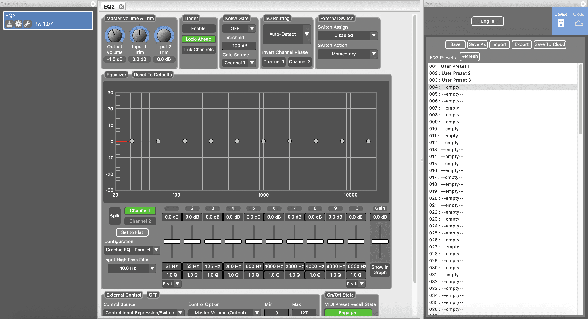
Connections
The Connections section is located on the left side of the Neuro Desktop Editor. This field displays all connected One Series pedals. Each connected pedal offers the three options listed below:
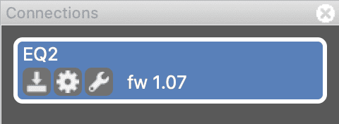
- Firmware Updates: The arrow icon checks for any recent firmware updates to the connected pedal. If an update is available, the software will provide instructions on how to proceed.
- Hardware Options: The gear icon opens the Hardware Options window. Each Source Audio pedal has its own set of global hardware settings. The attached pedal will retain all hardware option edits until either the option is changed, or a Factory Reset is performed.
- Open Editing Interface: The wrench icon opens the EQ2’s Sound Editor, revealing a deep set of editing controls for creating custom presets.
Hardware Options
Clicking the gear icon in the EQ2 Programmable EQ’s Connections window opens the Hardware Options menu (see the graphic below). Use the Hardware Options window to choose your pedal’s global hardware settings.
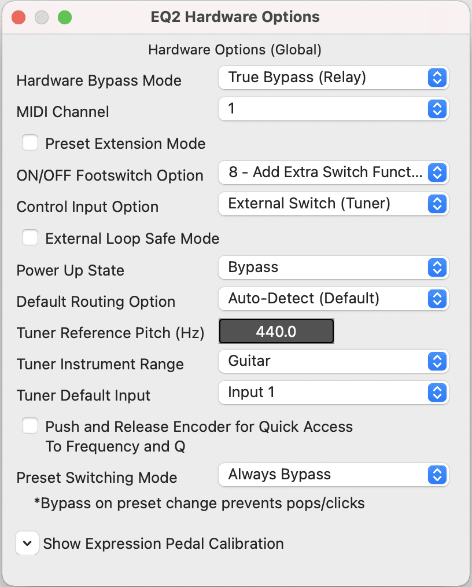
The EQ2 Programmable EQ’s Hardware Options include the following:
- Hardware Bypass Mode: Selects between True or Buffered Bypass.
- MIDI Channel: Selects the pedal’s MIDI channel (1 through 16).
- Preset Extension Mode: Allows access to the first 8 (instead of 4) preset locations using the SELECT/SAVE button.
- ON/OFF Footswitch Option: This dropdown menu contains 8 custom configurations for the tap, double-tap, press + hold engaged, and press + hold bypassed actions of the footswitch. The table below breaks down the ON/OFF footswitch action options:
| Starting State | BYPASS | ENGAGED | ||||||
|---|---|---|---|---|---|---|---|---|
| Action | down press | down & release | down & hold | double tap | down press | down & release | down & hold | double tap |
| Option 1 - Downstroke + Hold (default) | Engage | ---- | Increment Preset* | ---- | Bypass | ---- | Increment Preset* | ---- |
| Option 2 - No Hold Functions | Engage | ---- | ---- | ---- | Bypass | ---- | ---- | ---- |
| Option 3 - Upstroke + Hold Presets | ---- | Engage | Increment Preset* | ---- | ---- | Bypass | Increment Preset* | ---- |
| Option 4 - Upstroke + Hold Tuner | ---- | Engage | Tuner | ---- | ---- | Bypass | Tuner | ---- |
| Option 5 - Upstroke + Hold Both 1 | ---- | Engage | Increment Preset | ---- | ---- | Bypass | Tuner | ---- |
| Option 6 - Upstroke + Hold Both 2 | ---- | Engage | Tuner | ---- | ---- | Bypass | Increment Preset | ---- |
| Option 7 - Hold Presets/Double Tap Tuner | ---- | Engage | Increment Preset | Tuner | ---- | Bypass | Increment Preset | Tuner |
| Option 8 - Add Extra Switch Function | Engage | ---- | ---- | ---- | Ext. Function | ---- | Bypass | ---- |
- Control Input Option: This dropdown menu assigns the control function of the external switch connected to the CONTROL INPUT.
- External Loop Safe Mode: When using the EQ2 External Loop routing options, we suggest enabling this hardware option to prevent feedback in your external loop when the EQ2 is bypassed.
- Power Up State: Selects between engaging or bypassing the effect upon the initial power up of the pedal.
- Default Routing Option: Sets the default I/O signal routing mode. Descriptions of the available routing modes are available in the Stereo Operation & Signal Routing section of this manual.
- Tuner Reference Pitch: The typical reference pitch for tuning stringed instruments is A=440Hz, but for alternate use, the reference pitch can be set from 430Hz to 450Hz. Some musicians, like Jimi Hendrix, have preferred A=432Hz, suggesting it is more pleasing to the human ear.
- Default Tuner Input: When using the input switch mode, the tuner selection changes automatically. This sets the value that everything goes back to on power cycle or preset load.
-
Quick Access to Freq and Q with Encoder Push: Allows you to make on-the-fly adjustments
to Frequency and Q quicker with just the encoder knob, not having to menu-dive. Usage example,
when enabled:
- Select a band normally (push and turn)
- Click and release the encoder, the frequency of that band will now be displayed.
- Edit if you want, then press the encoder again
- Now Q is displayed for that band, edit, and press the encoder again
- Display goes back to normal view
-
Preset Switching Mode: Previously, on any preset change, the audio paths would switch
to a unity bypass while the new settings were being loaded. This was meant to avoid
pops/clicks or other artifacts that could arise with dramatic changes in the EQ settings.
Especially when switching between Series and Parallel filter configurations. However, it
resulted in an 80ms load time for new presets. This can be configured by the user now with
three options:
- Always Bypass – prevents pops and clicks in any case
- Never Bypass – load time is minimized to 20-25ms. Pops and clicks are possible.
- Bypass on Config Change Only – bypassing will only be used when switching the filter configuration. Load times will vary depending on preset settings.
- Pedal Input & Control Input Calibration (Accessible via the Show Expression Pedal Calibration dropdown controls): In some cases, it might be necessary to adjust the calibration range of an expression pedal to get the desired pedal response when using expression control either through the Neuro Hub, a direct connection to the Source Audio Dual Expression Pedal, or a 3rd-party pedal. To perform the calibration process, connect the pedal and press the “Calibrate” button. Then rock the pedal back and forth to set the minimum value and the range. When complete, press the “Stop and Set” button to retain the new calibration values. Or press “Reset” to return to the default values.
Sound Editor
Upon clicking the wrench icon in the Connections section, the EQ2 Programmable EQ’s Sound Editor interface appears in a tab in the center panel. This is where all of the sound editing work takes place.
The Sound Editor is broken into several sub-sections, each containing a unique variation of virtual knobs and dropdown menus. The following is a brief explanation of each Sound Editor sub-section.
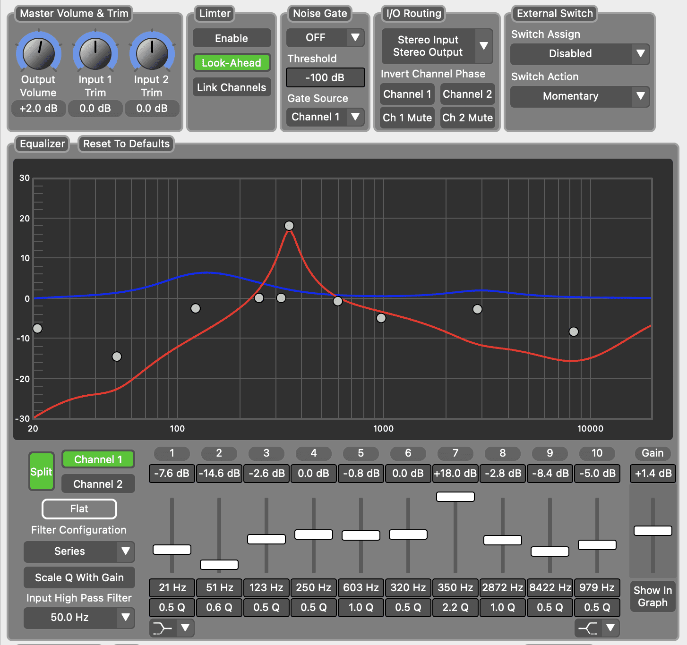
Equalizer
This powerful tool contains most of the key ingredients for sculpting your sound. The block is broken into the following sub-groups:
- Band Sliders: Each band from 1 to 10 is assigned a movable slider to boost or cut the selected frequency by +/- 18dB.
- Gain Slider: The channel gain, located to the right of the band sliders, is assigned to a movable slider to boost or cut the gain by +/- 18dB.
- Frequency Values: This field indicates the center frequency the band is currently set at. The frequency can be changed by either clicking the box then dragging the cursor up and down, or by double clicking and manually inputting a numeric value, then pressing the “Enter” key.
- Q Values: This field indicates the current Q factor value, or bandwidth, the band is currently set at. The default is 1.0. The Q can be changed by either clicking the box then dragging the cursor up and down, or by double clicking and manually inputting a numeric value, then pressing the “Enter” key.
- Split Mode: Enabling Split Mode will unlock access to Channel 2, which is mapped to Output 2. When Split Mode is activated, Channel 2 setting will be unlinked from Channel 1 and can be set to completely different values.
- Set to Flat: Click this to “start over” when creating your curve, this button will reset all frequency values to the flat default. Only the levels will be affected.
- Filter Configuration: Toggle between two band configurations: parallel filters, which is more common in graphic equalizers, and series/cascading filters, which is more common in true parametric equalizers.
- Scale With Q Gain: Enabling this option will auto-scale the Q factor when you boost/cut adjacent filters. Narrowing the Q as gain is increased makes frequency adjust more precise when two bands are near each other on the frequency spectrum.
- Input High Pass Filter: Each channel has a default high-pass filter, configurable 10Hz to 80Hz. Note that the filter is always active. Setting to 10Hz effectively removes the filter from the signal. Note: As of firmware 1.16, the Input High Pass Filter is now configurable from 10Hz up to 250Hz. Previous was 80Hz.
- Bands 1 and 10 Shape: The lowest and highest bands, 1 and 10, can be toggled from a standard “peaking” filter shape to a “shelving” shape. A low shelf cuts all frequencies to the left of the selected frequency. A high shelf cuts all frequencies to the right of the selected frequency. Note: As of firmware 1.16, Band 10 can now be configured as a low-pass filter. The gain slider is inactive for Low Pass mode, only Frequency and Q can be adjusted.
- Reset to Default: This option will reset all the equalizer settings to default including levels, frequencies, Q, and other options.
Master Volume & Trim
This block contains controls for independent input trim settings and a master Output control, with decibel readouts.
Limiter
We’ve included a clipping limiter to eliminate unwanted clipping that occurs under extreme settings.
- Enable: Click this to enable the limiter per channel.
- Look-Ahead: By default, the limiter uses a lookahead delay. Click this button to disable the lookahead delay.
- Link Channels: When “linked” the Limiter will use whichever channel has the highest levels. Otherwise, Channel 1 and 2 operate separately.
Noise Gate
We’ve included a noise gate to tame excess noise in your signal path.
- Enable: Click this to enable the noise gate per channel, either for a single channel or both.
- Threshold: By default, the noise gate threshold is set to -100dB, but can be set to a more aggressive -60dB for very noisy signals.
- Gate Source: Select the input source for the noise gate, either Channel 1 or Channel 2.
I/O Routing Options
Select the routing configurations of Inputs and Outputs 1 & 2. See the Stereo Operation & Signal Routing section for a detailed explanation of each routing option. As of firmware 1.16 & up, you may now use buttons to mute Channel 1 and/or Channel 2 if you desire.
External Switch
Controls for configuring the action of the External Switch. Please note that the hardware options for the Control Input jack must be set to “External Switch (Assignable)” to use these functions. The external switch can be assigned to several functions:
- Disabled – the footswitch will be ignored for this preset
- Channel Swap – Equalizer settings for Channel 1 and Channel 2 will be “swapped” when the footswitch is pressed. This function can be used for quickly changing the entire equalizer mid-song for a solo boost or timbre change.
- Input Select – This option can be used with multiple instrument inputs. By default, Input 1 will be used and Input 2 will be muted. When the footswitch is pressed Input 2 will be used and Input 1 will be muted. This option is great for switching instruments on the fly.
- Output Select – when using a single input and multiple outputs, you can effectively use this option as an “amp switcher”. By default, the signal is sent to Output 1 and Output 2 is muted. When the footswitch is pressed, Output 2 will be unmuted and Output 1 will be muted.
- Use for External Control – This powerful feature allows you to use the footswitch as the primary control source for the External Control section instead of an expression pedal. That means all of the control options available via expression can be mapped to the external switch instead! Any combination of level, frequency, Q adjustments, etc. can be configured. Note that unlike an expression pedal which will change continuously over the range between Min and Max, the switch will smoothly toggle back and forth between the Min and Max values.
The action of the external switch is also assignable:
- Momentary – the assigned switch function will only be active while the external switch is depressed. Once released it will return to the default values.
- Latching – in Latching mode, the external switch will “latch” when pressed and released and stay enabled until the switch is pressed again.
External Control
Control up to four parameters with a Source Audio Dual Expression Pedal or Tap Tempo Switch. Use the dropdown menus in the External Control block to select the expression device (Control Source) and controlled parameter (Control Option). Use the Min and Max fields to set the depth of the expression sweep.
Presets
The Presets section is located on the right side of the Neuro Desktop interface. There you will find a list of all the presets and empty preset positions available in your EQ2. The Presets section is also where you Save, Import, and Export presets. The buttons located at the top of the Presets field perform the functions listed below:
- Save As Button: After creating a new preset hit the Save As button and you will be prompted to name it and select the preset slot to which it will be saved.
- Save Button: If you have made edits to a pre-existing preset, use the Save button to update the preset without changing its name or preset position.
- Export Button: Use the Export button to save a preset on your computer or share it with other musicians. Presets are saved as .pre files and stored anywhere on your computer (we recommend creating a dedicated folder to store your presets). After creating a preset, hit the Export button - a window will pop up, asking you to name, tag, and select a location for the preset. After the preset is saved, the .pre file can be shared via email or any common file sharing method.
- Import Button: Use the Import button to upload saved .pre files to your Neuro Desktop Editor. Upon clicking the Import button you will be asked to find the .pre file. Simply go to your Neuro presets folder, select file, and upload.
- Refresh Button: Hit the Refresh button to restore the Neuro Desktop edits to the state immediately after your last save procedure.
- Hardware Presets: This is where all of your pedal presets are listed. Use the Save As button to select where you would like to store an edited preset—you can choose from any of the 128 preset positions.
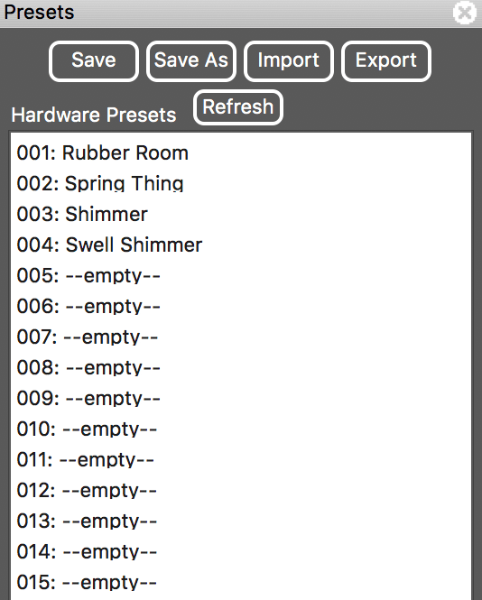
The Neuro Mobile App — with New Direct MIDI-USB Support
Like all Source Audio One Series pedals, the EQ2 is fully supported in the Neuro Mobile app. The Neuro Mobile app is available for iOS and Android devices and allows access to all of the preset parameters and hardware options described in the Neuro Desktop editor section above.
Connecting to the Neuro Mobile App (USB-MIDI)
The EQ2 is the first Source Audio pedal to add two-way communication with the Neuro Mobile app using MIDI over USB. To connect the EQ2 to the mobile device you will need the proper cable adapters.
-
iOS Devices – Any iOS device with a lightning connector is supported. A “Lightning to
USB Camera Adapter” is required. Connect the adapter to the USB A/B-mini cable that was
included with your EQ2.
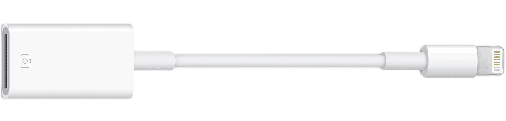
-
Android Devices – Android devices may have either USB-micro or USB-C connectors that
will support MIDI over USB communication with the EQ2. You will need the appropriate USB B/C
(male) to USB A (female) adapter to use with the included USB A/B-mini cable. Note that the
USB B-micro to USB A adapter is sometimes called an OTG (On-The-Go) adapter.
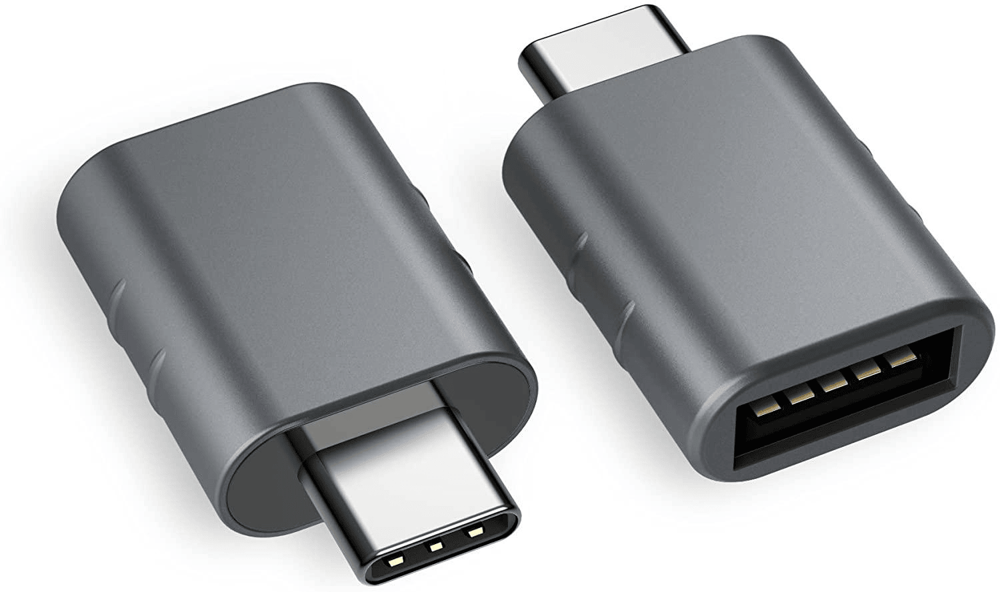
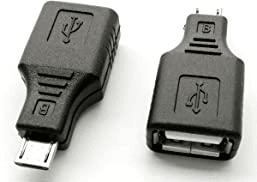
Connecting to the Neuro Mobile App (headphone jack)
The EQ2 also supports one-way communication between a mobile device and the pedal using the included TRS ¼” to 1/8” cable. Connect the cable to the headphone jack of your mobile device and Input 2 of the EQ2. The cable is a TRS (stereo) connector that uses the “Right” channel to send data over audio signals to the pedal.
When using the headphone jack connection, we recommend using the Volume Calibration features in the Neuro Mobile app to set, test and configure the audio output for the most reliable communication between the mobile device and pedal.
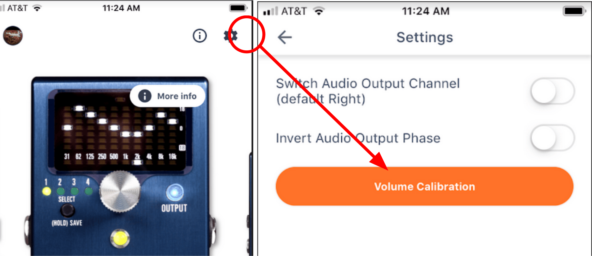
Neuro Hub
The Source Audio Neuro Hub (sold separately) unites Source Audio pedals from the Soundblox 2 and One Series families to create a single, stage-ready effects system. It features shared MIDI, passive expression pedal input, Hot Hand connectivity, and USB, and can connect up to five Source Audio pedals. The Neuro Hub features a powerful scene saving functionality, which allows you to create up to 128 multi-pedal presets known as scenes, each recallable via MIDI program change messages. Connect the Neuro Hub to your computer via USB for updates, saving and editing multi-pedal presets, and more. To connect the EQ2 to the Neuro hub, use a 3.5 mm TRRS cable and make a connection between the EQ2’s CONTROL INPUT jack and any of the Neuro Hub’s multi-function outputs. For more information, refer to the Neuro Hub documentation on the Source Audio website.
MIDI
Using the MIDI IN jack (5-pin DIN) or a USB connection, the EQ2 can be controlled by generic MIDI Continuous Controller (CC) and Program Change (PC) messages. Many of the EQ2’s parameters (even those that are not assigned to a control knob) are directly accessible via MIDI continuous controller messages.
MIDI Channel
By default, the EQ2 responds to MIDI Channel 1. The EQ2 ignores all MIDI messages sent to it that are not on its channel. The input MIDI channel for the EQ2 can be changed in the Hardware Options menu of the Neuro Editors. Note that the MIDI Input Channel is a global setting that is NOT saved per preset. Note that some manufacturers begin counting MIDI channels at zero (from 0 to 15), while the Source Audio Neuro Editors use the convention of counting from 1 to 16.
Selecting Presets via Program Change (PC) Messages
The 128 user presets on the EQ2 can be recalled via program change messages. Presets 1 to 128 are mapped to MIDI Program Change messages 1 to 128.
It is possible to save presets with the EQ2 bypassed.
Many of the parameters in the EQ2 can be controlled via MIDI. For more details, see MIDI Implementation.
Controlling the EQ2 with MIDI Continuous Controller (CC) Messages
The EQ2 responds to MIDI Continuous Controller (CC) messages. The pedal comes already mapped to a default set of CC numbers. For a complete list of default MIDI mappings and ranges, download the EQ2 Programmable EQ MIDI Implementation Guide located at the bottom of the EQ2 Programmable EQ page on the Source Audio website.
Custom CC Mapping
The default MIDI map provides control over parameters using specific Continuous Controller messages. It is also possible to override the default map and create a custom mapping. Custom MIDI CC mappings are global, meaning they are not unique per preset. The CC mapping will apply in all situations, regardless of which preset is active.
To create a custom MIDI CC mapping, follow these steps:
- Connect your EQ2 to the Neuro Desktop Editor.
- In the top bar menu select Device then Edit Device MIDI Map from the dropdown menu.
- The EQ2 MIDI Map Editor window will open. Simply scroll to the MIDI CC value you wish to remap and click that CC’s dropdown menu. A list of parameter choices will unfold.
- Select the parameter you wish to re-assign to the chosen CC. The process is complete.
MIDI Mapping Table
The EQ2 Programmable Equalizer MIDI Mapping Table, as published as a standalone MIDI Implementation Guide at the bottom of the EQ2 Programmable EQ page on the Source Audio website.
| Parameter | Default CC | Range | Comment |
|---|---|---|---|
| Master Volume (Output) | 0 | 0 - 127 | 0 = -∞, 64 = Unity, 127 = +12dB |
| Input 1 Trim | 1 | 0 - 127 | 0 = -∞, 64 = Unity, 127 = +6dB |
| Input 2 Trim | 2 | 0 - 127 | 0 = -∞, 64 = Unity, 127 = +6dB |
| Channel 1, Band 1 - Level | 3 | 0 - 36 | 0 = -18dB, 18 = 0dB, 36 = +18dB |
| Channel 1, Band 2 - Level | 4 | 0 - 36 | ” |
| Channel 1, Band 3 - Level | 5 | 0 - 36 | ” |
| Channel 1, Band 4 - Level | 6 | 0 - 36 | ” |
| Channel 1, Band 5 - Level | 7 | 0 - 36 | ” |
| Channel 1, Band 6 - Level | 8 | 0 - 36 | ” |
| Channel 1, Band 7 - Level | 9 | 0 - 36 | ” |
| Channel 1, Band 8 - Level | 10 | 0 - 36 | ” |
| Channel 1, Band 9 - Level | 11 | 0 - 36 | ” |
| Channel 1, Band 10 - Level | 12 | 0 - 36 | ” |
| Channel 2, Band 1 - Level | 13 | 0 - 36 | ” |
| Channel 2, Band 2 - Level | 14 | 0 - 36 | ” |
| Channel 2, Band 3 - Level | 15 | 0 - 36 | ” |
| Channel 2, Band 4 - Level | 16 | 0 - 36 | ” |
| Channel 2, Band 5 - Level | 17 | 0 - 36 | ” |
| Channel 2, Band 6 - Level | 18 | 0 - 36 | ” |
| Channel 2, Band 7 - Level | 19 | 0 - 36 | ” |
| Channel 2, Band 8 - Level | 20 | 0 - 36 | ” |
| Channel 2, Band 9 - Level | 21 | 0 - 36 | ” |
| Channel 2, Band 10 - Level | 22 | 0 - 36 | ” |
| Channel 1, Band 1 - Frequency | 23 | 0 - 127 | 20 Hz to 20 kHz, log spaced |
| Channel 1, Band 2 - Frequency | 24 | 0 - 127 | ” |
| Channel 1, Band 3 - Frequency | 25 | 0 - 127 | ” |
| Channel 1, Band 4 - Frequency | 26 | 0 - 127 | ” |
| Channel 1, Band 5 - Frequency | 27 | 0 - 127 | ” |
| Channel 1, Band 6 - Frequency | 28 | 0 - 127 | ” |
| Channel 1, Band 7 - Frequency | 29 | 0 - 127 | ” |
| Channel 1, Band 8 - Frequency | 30 | 0 - 127 | ” |
| Channel 1, Band 9 - Frequency | 31 | 0 - 127 | ” |
| Channel 1, Band 10 - Frequency | 32 | 0 - 127 | ” |
| Channel 2, Band 1 - Frequency | 33 | 0 - 127 | ” |
| Channel 2, Band 2 - Frequency | 34 | 0 - 127 | ” |
| Channel 2, Band 3 - Frequency | 35 | 0 - 127 | ” |
| Channel 2, Band 4 - Frequency | 36 | 0 - 127 | ” |
| Channel 2, Band 5 - Frequency | 37 | 0 - 127 | ” |
| Channel 2, Band 6 - Frequency | 38 | 0 - 127 | ” |
| Channel 2, Band 7 - Frequency | 39 | 0 - 127 | ” |
| Channel 2, Band 8 - Frequency | 40 | 0 - 127 | ” |
| Channel 2, Band 9 - Frequency | 41 | 0 - 127 | ” |
| Channel 2, Band 10 - Frequency | 42 | 0 - 127 | ” |
| Channel 1, Band 1 - Q | 43 | 0 - 95 | 0 = 0.5, 5 = 1.0 (default), 95 = 10.0 |
| Channel 1, Band 2 - Q | 44 | 0 - 95 | ” |
| Channel 1, Band 3 - Q | 45 | 0 - 95 | ” |
| Channel 1, Band 4 - Q | 46 | 0 - 95 | ” |
| Channel 1, Band 5 - Q | 47 | 0 - 95 | ” |
| Channel 1, Band 6 - Q | 48 | 0 - 95 | ” |
| Channel 1, Band 7 - Q | 49 | 0 - 95 | ” |
| Channel 1, Band 8 - Q | 50 | 0 - 95 | ” |
| Channel 1, Band 9 - Q | 51 | 0 - 95 | ” |
| Channel 1, Band 10 - Q | 52 | 0 - 95 | ” |
| Channel 2, Band 1 - Q | 53 | 0 - 95 | ” |
| Channel 2, Band 2 - Q | 54 | 0 - 95 | ” |
| Channel 2, Band 3 - Q | 55 | 0 - 95 | ” |
| Channel 2, Band 4 - Q | 56 | 0 - 95 | ” |
| Channel 2, Band 5 - Q | 57 | 0 - 95 | ” |
| Channel 2, Band 6 - Q | 58 | 0 - 95 | ” |
| Channel 2, Band 7 - Q | 59 | 0 - 95 | ” |
| Channel 2, Band 8 - Q | 60 | 0 - 95 | ” |
| Channel 2, Band 9 - Q | 61 | 0 - 95 | ” |
| Channel 2, Band 10 - Q | 62 | 0 - 95 | ” |
| Channel 1, Band 1 Type | -- | 0 - 1 | 0 = Peak Filter, 1 = Shelving Filter |
| Channel 1, Band 10 Type | -- | 0 - 1 | ” |
| Channel 2, Band 1 Type | -- | 0 - 1 | ” |
| Channel 2, Band 10 Type | -- | 0 - 1 | ” |
| Channel 1 Config | -- | 0 - 1 | 0 = Parallel (Graphic), 1 = Series (Parametric) |
| Channel 2 Config | -- | 0 - 1 | ” |
| Channel 1 Phase | -- | 0 - 1 | 0 = Normal, 1 = Inverted |
| Channel 2 Phase | -- | 0 - 1 | ” |
| Channel 1 Gain | 69 | 0 - 36 | 0 = -18dB, 18 = 0dB, 36 = +18dB |
| Channel 2 Gain | 70 | 0 - 36 | 0 = -18dB, 18 = 0dB, 36 = +18dB |
| Split Channels | -- | 0 - 1 | 0 = OFF (Channels Linked), 1 = ON (Not Linked) |
| Limiter Enable | -- | 0 - 1 | 0 = OFF, 1 = ON |
| Limiter Look-ahead | -- | 0 - 1 | 0 = OFF, 1 = ON |
| Limiter Stereo Link | -- | 0 - 1 | 0 = OFF, 1 = ON |
| Gate Enable | -- | 0 - 3 | 0 = OFF, 1 = Both, 2 = Channel 1, 3 = Channel 2 |
| Gate Threshold | -- | 0 - 75 | 0 = -100dB, 75 = -25dB |
| Gate Source | -- | 0 - 1 | 0 = Channel 1, 1 = Channel 2 |
| Channel 1 Input High Pass | 71 | 0 - 28 | 0 = 10Hz, 28 = 80Hz (0.5Hz per step) |
| Channel 2 Input High Pass | 72 | 0 - 28 | ” |
| Routing Option | 73 | 0 - 4 | 0 = Auto Detect, 1 = Mono -> Stereo, 2 = Stereo -> Stereo, 3 = Stereo -> Mono, 4 = [cut off in the printed table] |
| Switch Assign | -- | 0 - 4 | 0 = Disabled |
| Switch Action | -- | 0 - 1 | 0 = Momentary, 1 = Latching |
| Enable External Control | -- | 0 - 1 | 0 = OFF, 1 = ON |
| Preset Decrement | 80 | -- | Any Value |
| Preset Increment | 82 | -- | Any Value |
| Enable/Disable Tuner | 83 | -- | Any value enables, any MIDI CC will disable |
| Remote Switch Function | 94 | -- | Latching Only, Any Value |
| Remote Expression | 100 | 0 - 127 | For using MIDI as External Control Source |
| Bypass/Engage | 101 | 0 - 127 | Value < 64 = Bypass, Value >= 64 Engage |
| Toggle Bypass/Engage | 102 | -- | Any Value |
| Recall Preset Bypassed | 103 | 0 - 127 | Recall Preset (Value) in Bypass state |
| Recall Preset Engaged | 104 | 0 - 127 | Recall Preset (Value) in Engaged state |
USB
The EQ2’s USB port is plug-and-play ready for Windows and Mac computers. The EQ2 uses class-compliant drivers, so no special drivers are needed. Just power up the EQ2 and connect it to the computer using a USB cable. The computer will automatically recognize the EQ2, which will be identified as “One Series EQ2 Programmable EQ” in the operating system.
USB connectivity brings many benefits, such as the ability to connect with the Neuro Desktop Editor for downloading EQ2 firmware updates, accessing an advanced set of effect editing parameters, and downloading user presets. The USB port also provides MIDI connectivity to a DAW.
USB-MIDI
The EQ2 will appear as a MIDI device in your computer’s operating system. As a result, the EQ2 can communicate with audio production software that utilizes MIDI, such as Pro Tools, Ableton Live, Logic Pro, and more. MIDI messages can be sent directly to the EQ2 using the USB connection, which allows for full automation of the EQ2 within host software such as a DAW. For example, a frequency band can be automated by outputting MIDI continuous controller messages from the host software to the EQ2 via the USB connection. For more details, see MIDI Implementation.
Specifications
Dimensions
- Length: 11.63 cm (4.58 inches)
- Width: 7.00 cm (2.75 inches)
- Height (not including knobs and footswitches): 3.71 cm (1.46 inches)
- Height (including knobs and footswitches): 5.61 cm (2.21 inches)
Weight
- 280 grams (0.625 pounds)
Power
- 200mA @ 9V DC
- Center negative, Barrel positive plug, 2.1 mm inner diameter, 5.5 mm outer diameter
Audio Performance
- Maximum Input Level: +6.54 dBV = 8.76 dBu = 2.12 V RMS = 6.0 V p-p
- Full Scale Output Level: +6.54 dBV = 8.76 dBu = 2.12 V RMS = 6.0 V p-p
- Input Impedance: 1 Mega Ohm (1 MΩ)
- Output Impedance: 600 Ohm (600 Ω)
- 110 dB DNR Audio Path
- 24-bit Audio Conversion
- 56-bit Digital Data Path
- Universal Bypass (relay-based true bypass or analog buffered bypass)
Troubleshooting
Restore Factory Settings
In order to revert the EQ2 to its factory settings, clearing all user data, presets, expression mappings, and changes to the MIDI mapping, use either the Neuro Mobile App or Neuro Desktop Editor and choose the Factory Reset option in the Hardware Options menus. It is also possible to perform a factory reset without the Neuro App by following these steps:
- Press and hold the FOOTSWITCH.
- Connect the power supply.
- The CONTROL LED will blink rapidly until the reset is complete. You can stop holding the FOOTSWITCH once the CONTROL LED starts to blink.
Noise/Hum
Power source: Ensure that the proper power supply is being used.
Near noise source: Move pedal away from power supplies and other equipment.
Other equipment: Remove other effects from signal chain; see if noise persists.
Bad cables: Swap out audio cables.
USB ground loop: When connected to a computer using a USB cable, noise can appear in the audio signal. This usually results from ground loop noise due to the EQ2 and computer running on separate power supplies. In the case of laptops, disconnecting the computer’s power supply and running it on a battery can often mitigate the noise. External display monitors are often the primary source of noise, and powering down monitors can also resolve noise issues.
Ground loop with amp: Make sure your EQ2 is running on the same power mains circuit as your guitar amplifier.
Unit Appears Dead / No LEDs Lit
Wrong power supply: Use correct power supply. See the DC 9V (Power) section for more details.
Frequently Asked Questions
What kind of instruments can I connect to the EQ2’s inputs?
The EQ2’s audio inputs are high impedance (~ 1 MΩ) and they can accept high impedance signal sources like guitars/basses with passive pickups, as well as low impedance sources like line-level audio circuits, guitars/basses with active pickups, electronic keyboards, or mixer outputs. The input circuit can handle signals ranging up to 6.0 Volts, peak-to-peak.
Can I power the EQ2 directly over USB, without using the 9 Volt supply?
No. USB provides 5 Volts, but the EQ2 needs 9 Volts, so the EQ2 cannot be powered directly from USB.
When connecting the EQ2 to a recording interface or mixer, should I use a Lo-Z (microphone) or Hi-Z (line / instrument) input?
The EQ2’s output will be low impedance when the effect is active or in buffered bypass mode, but it will be high impedance when using true bypass mode and a guitar with passive pickups. Therefore, it is recommended that you use a high impedance (Hi-Z) input on your recording interface or mixer to avoid signal loss.
Why doesn’t the EQ2 respond to MIDI messages being sent to it?
By default, the EQ2 should respond to MIDI continuous controller messages on channel 1. The EQ2’s MIDI channel can be configured using the Neuro Editors. Channel numbers in MIDI use zero-based counting, so MIDI channel 1 is described as 0 in hexadecimal, MIDI channel 2 is described as 1 in hexadecimal, and so on, concluding with MIDI channel 16, which is described as F in hexadecimal. A continuous controller message starts with a hexadecimal B and is followed by the channel number (0 through F).
So, the command byte from your MIDI controller should be formatted as shown in the following table:
| MIDI Channel (Decimal) | CC Command Byte (Hex) |
|---|---|
| 1 | B0 |
| 2 | B1 |
| 3 | B2 |
| 4 | B3 |
| 5 | B4 |
| 6 | B5 |
| 7 | B6 |
| 8 | B7 |
| 9 | B8 |
| 10 | B9 |
| 11 | BA |
| 12 | BB |
| 13 | BC |
| 14 | BD |
| 15 | BE |
| 16 | BF |
Each continuous controller command byte is followed by two bytes, the CC number and the value. So, each CC message consists of a total of three bytes. If the EQ2 is not responding to MIDI, make sure that your MIDI controller is properly configured and sending messages in the format described above.
Can I use the EQ2 in my amp’s effects loop?
The EQ2’s audio inputs can handle up to 8.76 dBu or 6.0 Volts peak-to-peak, which allows it to work in most amp effects loops. Be sure to check your amp’s documentation to verify that the maximum send level is less than the EQ2’s maximum input level.
How do I update the firmware?
Firmware updates are available via the Neuro Desktop Editor using the USB port. Power the pedal and connect it to your computer using a mini USB cable. The Neuro Desktop Editor is available from Source Audio’s website: http://www.sourceaudio.net/editorsandfirmware. While the pedal is connected, select the Arrow Icon located in the EQ2 Programmable EQ square in the Connections field.
Mac isn’t letting me download your software?
Mac users may see this warning message when trying to open the Neuro Desktop software: “App can’t be opened because it was not downloaded from the Mac App Store.” In order to run the Neuro Desktop, please refer to the steps in this Apple support article: https://support.apple.com/en-us/HT202491.
Rubber Feet
The EQ2 comes standard with a flat aluminum bottom, making it easy to apply Velcro and mount to a pedalboard. Additionally, adhesive rubber feet are included in the EQ2 box. Applying the rubber feet to the EQ2 can help prevent it from sliding on flat surfaces such as a hardwood floor.
Waste Disposal Notes
If possible, dispose of the device at an electronics recycling center. Do not dispose of the device with the household waste.
For full compliance with EN 61000-4-6 standard, input cable must be less than 3 meters in length.
Warranty
Limited Transferrable Warranty
Source Audio, LLC (hereinafter “Source Audio”) warrants that your new Source Audio One Series EQ2 Programmable EQ, when purchased at an authorized Source Audio dealer in the United States of America (“USA”), shall be free from defects in materials and workmanship under normal use for a period of two (2) years from the date of purchase by the original purchaser. Please contact your dealer for information on warranty and service outside of the USA.
Under this Limited Warranty, Source Audio’s sole obligation and the purchaser’s sole remedy shall be repair, replacement, or upgrade, at Source Audio’s sole discretion, of any product that, if properly used and maintained, proves to be defective upon inspection by Source Audio. Source Audio reserves the right to update any unit returned for repair and to change or improve the design of the product at any time without notice. Source Audio reserves the right to use reconditioned parts and assemblies as warranty replacements for authorized repairs. Any product repaired, replaced, or upgraded pursuant to this Limited Warranty will be warranted for the remainder of the original warranty period.
This Limited Warranty is extended to the original retail purchaser. This Limited Warranty can be transferred to anyone who may subsequently purchase this product provided that such transfer is made within the applicable warranty period and Source Audio is provided with all of the following information: (i) all warranty registration information (as set forth on the registration card) for the new owner, (ii) proof of the transfer, within thirty (30) days of the transfer, and (iii) a photocopy of the original sales receipt. Warranty coverage shall be determined by Source Audio in its sole discretion. This is your sole warranty. Source Audio does not authorize any third party, including any dealer or sales representatives, to assume any liability on behalf of Source Audio or to make any warranty on behalf of Source Audio.
Warranty Information
Source Audio may, at its option, require proof of the original purchase date in the form of a dated copy of the original authorized dealer’s invoice or sales receipt. Service and repairs of Source Audio products are to be performed only at the Source Audio factory or a Source Audio authorized service center. Prior to service or repair under this Limited Warranty, the purchaser must request from Source Audio a return authorization, which is available at:
Source Audio LLC
120 Cummings Park, Woburn, MA 01801
(781) 932-8080 or at www.sourceaudio.net
Unauthorized service, repair, or modification will void this Limited Warranty.
Disclaimer and Limitation of Warranty
Do not open the effects pedal under any circumstance. This will void the warranty.
The foregoing limited warranty is the only warranty given by Source Audio and is in lieu of all other warranties. All implied warranties, including warranties of merchantability and fitness for any particular purpose, exceeding the specific provisions of this limited warranty, are hereby disclaimed and excluded from this limited warranty. Upon expiration of the applicable express warranty period, Source Audio shall have no further warranty obligation of any kind, express or implied. Source Audio shall in no event be liable for any special, incidental, or consequential damages suffered by the purchaser or any third party, including without limitation, damages for loss of profits or business or damages resulting from use or performance of the product, whether in contract or in tort. Source Audio shall not be liable for any expenses, claims, or suits arising out of or relating to any of the foregoing. Some states do not allow the exclusion or limitation of implied warranties so some of the above limitations and exclusions may not apply to you. This Limited Warranty gives you specific legal rights, and you may also have other rights, which vary, from state to state. This Limited Warranty only applies to products sold and used in the USA. Source Audio shall not be liable for damages or loss resulting from the negligent or intentional acts of the shipper or its contracted affiliates. You should contact the shipper for proper claims procedures in the event of damage or loss resulting from shipment.
Version History
May 9, 2020: Initial release
Quick Start Reference Card
The one-page Quick Start Reference Card that ships with the pedal.
POWER: Power your EQ2 with the included power supply, or a regulated PSU with 9 Volts DC center-negative tip @ 180mA of current.
CONTROLS:
BAND SELECT – Select a band by pressing + turning the Encoder knob. When Split Mode is enabled, continue turning past the 16kHz band to access and edit Channel 2 settings.
BAND LEVEL ADJUST – Adjust a band +/- 1dB by rotating the Encoder knob clockwise to boost or counterclockwise to cut the selected frequency.
SET TO FLAT – To quickly revert all band levels back to zero, double-tap the Encoder knob.
OUTPUT KNOB – Rotate the OUTPUT knob to adjust the master output level for both channels from -∞ to +12dB indicated by the brightness of the blue LED. Unity gain (0dB) is at the 12 o’clock position and is indicated when the blue LED blinks.
SELECT/SAVE Button – Tap to scroll through presets. Press + hold to save a preset.
PRESET SCROLLING – Press + hold the footswitch to scroll forward through presets.
TUNER – Press the footswitch while holding the encoder knob down to access the onboard chromatic tuner. Tap the footswitch again to return to the pedal’s previous state.
OPTIONS MENU – To enter the Options Menu for parametric EQ editing and additional tone-sculpting tools, press + hold the encoder knob. Items marked with a “G” are global.
| Menu Item | Description |
|---|---|
| FREQ | Adjust each band’s frequency from 20Hz to 20,000Hz (20kHz). |
| Q FACT | Adjust the Q Factor (width) of each band from 0.5 (wide) to 10.0 (narrow). |
| GAIN | Adjust the Channel 1 or Channel 2 gain from -18dB to +18dB. |
| SPLIT | Turn on Split Mode to allow Channel 2 settings to be independent of Channel 1. |
| LIMITER | Enable or disable a hard limiter to prevent unwanted clipping. |
| GATE | Enable or disable the noise gate. |
| THRESHOLD | Adjust the threshold of the noise gate from -100dB to -60dB. |
| HP FREQ | Adjust each channel’s independent input high pass filter from 10Hz to 80Hz. |
| SHELF | Toggle between a normal peaking filter to a shelving filter on bands 1 & 10 only. |
| CONFIG | Toggle between parallel (P) and cascading/series (S) filters. |
| MIDI CH (G) | Change the EQ2’s MIDI channel (global). |
| FS OPTION (G) | Select the main footswitch operation mode (global). |
| CRTL OPTION (G) | Select the Control Input mode: 1 (Hub/Exp), 2 (Ext. Switch), 3 (Preset +/-), 4 (Tuner) |
Neuro Desktop Editor and Neuro Mobile App
The Neuro Mobile App and Neuro Desktop open your Source Audio One Series pedals to another world of preset sharing, deeper editing, and access to comprehensive Hardware Options that add customization and flexibility to your pedal. See The Neuro Desktop Editor and The Neuro Mobile App for the full walkthrough.
The Neuro Desktop Editor – A Professional Editing Experience
The EQ2 features an advanced graphical editing environment in the Neuro Desktop editor. Connect your EQ2 to your Windows or Mac computer with the included USB cable to make precise, in-depth changes. Use the Neuro Desktop editor to access and manage hardware presets, customize your hardware options, and browse Neuro Community presets.
The Neuro Desktop editor is also used to perform occasional firmware updates, and can be downloaded at: www.sourceaudio.net/editorsandfirmware.html
Neuro Mobile App – Now with Direct MIDI-USB Support
Comprehensive editing for your EQ2 on the go! The EQ2 is the first Source Audio pedal to add two-way communication with the Neuro Mobile app using MIDI over USB. To connect the EQ2 to your mobile device by USB you will need the proper cable adapters.
- iOS Devices – Any iOS device with a lightning connector is supported. A “Lightning to USB Camera Adapter” is required. Connect the adapter to the USB A/B-mini cable that was included with your EQ2.
- Android Devices – Android devices may have either USB-micro or USB-C connectors that will support MIDI over USB communication with the EQ2. You will need the appropriate USB B/C (male) to USB A (female) adapter to use with the included USB A/B-mini cable. Note that the USB B-micro to USB A adapter is sometimes called an OTG (On-The-Go) adapter.
Neuro Mobile App one-way communication is also supported on the EQ2. Use your device’s headphone jack and included TRS cable to connect to Input 2 on your EQ2.
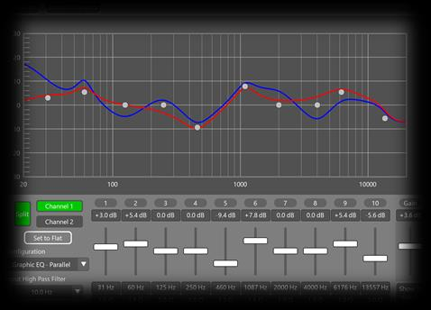
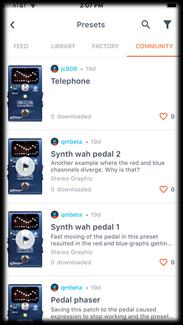
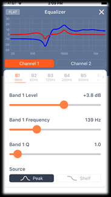
USERS GUIDE – NEURO DESKTOP – NEURO MOBILE – SUPPORT
www.sourceaudio.net
©Source Audio LLC | 120 Cummings Park, Woburn, MA 01801 | www.sourceaudio.net